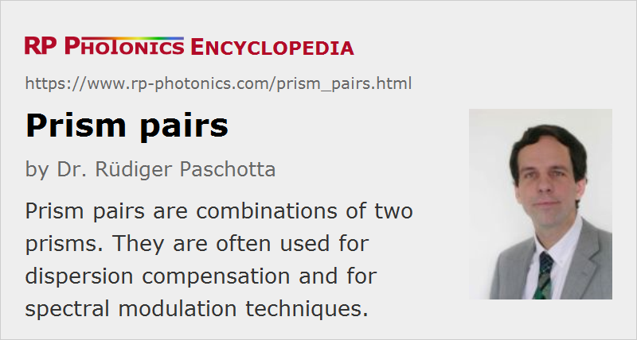

Prism Pairs
Definition: combinations of two prisms, mostly used for dispersion compensation
More specific term: anamorphic prism pairs
German: Prismenpaare
Categories: general optics, light pulses, methods
How to cite the article; suggest additional literature
Author: Dr. Rüdiger Paschotta
Pairs of (typically Brewster-angled) prisms can be used as beam expanders – see the article on anamorphic prism pairs. Another application, discussed in this article, is for introducing anomalous chromatic dispersion e.g. into a laser resonator without introducing significant power losses. A first prism refracts different wavelength components to slightly different angles. A second prism then refracts all components again to let them propagate in parallel directions after that prism (see Figure 1), but with a wavelength-dependent position (which is sometimes called a spatial chirp).

With a second prism pair, or simply by reflecting the beams back through the original prism pair (possibly with a small vertical offset for easier separation from the input beam), all wavelength components can later be spatially recombined; the total chromatic dispersion (see below) is then twice that for a single pass through the prism pair.
The spatial separation of different wavelength (or frequency) components can be utilized in different ways:
- An optical filter can be realized e.g. by inserting a knife edge from one side, attenuating primarily the short- or the long-wavelength components. This can be used e.g. for wavelength tuning of lasers by placing such a prism pair within the laser resonator.
- The wavelength-dependent optical path length of such a dispersive delay line leads to anomalous chromatic dispersion [2], which may be partly offset by material dispersion in the prisms. The overall chromatic dispersion can be adjusted by varying the insertion of one or both prisms into the beam. This technique is often used to provide adjustable dispersion compensation in mode-locked lasers (Figure 2) (e.g. for soliton mode locking) and for dispersive compression (or stretching) of optical pulses. For calculating the obtained amount of chromatic dispersion (second and higher orders), one may use Ref. [2] or some suitable software.

Typical amounts of anomalous group delay dispersion from prism pairs are up to a few thousand fs2. This is often sufficient for dispersion compensation in mode-locked bulk lasers, but often not for chirped-pulse amplification, for example. For larger amounts of dispersion, a pair of diffraction gratings may be required; these exhibit far greater angular dispersion and thus also greater chromatic dispersion. The attraction of using a prism pair, however, is that anomalous dispersion can be provided without introducing significant losses into a laser resonator, assuming operation with p-polarized beams close to Brewster's angle.
Fig. 4 shows the chromatic dispersion of a pair of SF10 prisms for different values of the prism insertion; this demonstrates how the dispersion can be adjusted simply by translating a prism.
For the compression of ultrashort pulses in the few-cycle region, prisms with a fairly small apex angle (and anti-reflection coatings) are sometimes used. Such configurations can achieve a lower residual chirp from higher-order dispersion. However, it is often necessary to compensate the higher-order dispersion with other means, e.g. with additional dispersive mirrors.
Questions and Comments from Users
Here you can submit questions and comments. As far as they get accepted by the author, they will appear above this paragraph together with the author’s answer. The author will decide on acceptance based on certain criteria. Essentially, the issue must be of sufficiently broad interest.
Please do not enter personal data here; we would otherwise delete it soon. (See also our privacy declaration.) If you wish to receive personal feedback or consultancy from the author, please contact him e.g. via e-mail.
By submitting the information, you give your consent to the potential publication of your inputs on our website according to our rules. (If you later retract your consent, we will delete those inputs.) As your inputs are first reviewed by the author, they may be published with some delay.
Bibliography
| [1] | O. E. Martinez, J. P. Gordon and R. L. Fork, “Negative group-velocity dispersion using refraction”, J. Opt. Soc. Am. A 1 (10), 1003 (1984), doi:10.1364/JOSAA.1.001003 |
| [2] | R. L. Fork et al., “Negative dispersion using pairs of prisms”, Opt. Lett. 9 (5), 150 (1984), doi:10.1364/OL.9.000150 |
| [3] | J. D. Kafka and T. Baer, “Prism-pair dispersive delay lines in optical pulse compression”, Opt. Lett. 12 (6), 401 (1987), doi:10.1364/OL.12.000401 |
See also: prisms, dispersion compensation, anamorphic prism pairs, diffraction gratings
and other articles in the categories general optics, light pulses, methods
|  |
If you like this page, please share the link with your friends and colleagues, e.g. via social media:
These sharing buttons are implemented in a privacy-friendly way!